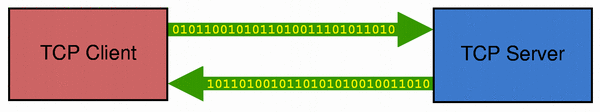
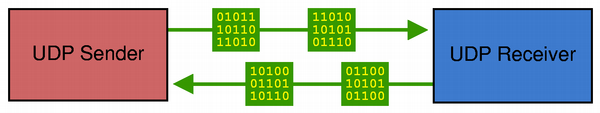

Network Programming with Qt
The Qt Network module offers classes that allow you to write TCP/IP clients and servers. It offers lower-level classes such as QTcpSocket, QTcpServer and QUdpSocket that represent low level network concepts, and high level classes such as QNetworkRequest, QNetworkReply and QNetworkAccessManager to perform network operations using common protocols. It also offers classes such as QNetworkConfiguration, QNetworkConfigurationManager and QNetworkSession that implement bearer management.
Qt's Classes for Network Programming
The Qt Network C++ Classes page contains a list of the C++ classes in Qt Network.
High Level Network Operations for HTTP and FTP
The Network Access API is a collection of classes for performing common network operations. The API provides an abstraction layer over the specific operations and protocols used (for example, getting and posting data over HTTP), and only exposes classes, functions, and signals for general or high level concepts.
Network requests are represented by the QNetworkRequest class, which also acts as a general container for information associated with a request, such as any header information and the encryption used. The URL specified when a request object is constructed determines the protocol used for a request. Currently HTTP, FTP and local file URLs are supported for uploading and downloading.
The coordination of network operations is performed by the QNetworkAccessManager class. Once a request has been created, this class is used to dispatch it and emit signals to report on its progress. The manager also coordinates the use of cookies to store data on the client, authentication requests, and the use of proxies.
Replies to network requests are represented by the QNetworkReply class; these are created by QNetworkAccessManager when a request is dispatched. The signals provided by QNetworkReply can be used to monitor each reply individually, or developers may choose to use the manager's signals for this purpose instead and discard references to replies. Since QNetworkReply is a subclass of QIODevice, replies can be handled synchronously or asynchronously; i.e., as blocking or non-blocking operations.
Each application or library can create one or more instances of QNetworkAccessManager to handle network communication.
Using TCP with QTcpSocket and QTcpServer
TCP (Transmission Control Protocol) is a low-level network protocol used by most Internet protocols, including HTTP and FTP, for data transfer. It is a reliable, stream-oriented, connection-oriented transport protocol. It is particularly well suited to the continuous transmission of data.

The QTcpSocket class provides an interface for TCP. You can use QTcpSocket to implement standard network protocols such as POP3, SMTP, and NNTP, as well as custom protocols.
A TCP connection must be established to a remote host and port before any data transfer can begin. Once the connection has been established, the IP address and port of the peer are available through QTcpSocket::peerAddress() and QTcpSocket::peerPort(). At any time, the peer can close the connection, and data transfer will then stop immediately.
QTcpSocket works asynchronously and emits signals to report status changes and errors, just like QNetworkAccessManager. It relies on the event loop to detect incoming data and to automatically flush outgoing data. You can write data to the socket using QTcpSocket::write(), and read data using QTcpSocket::read(). QTcpSocket represents two independent streams of data: one for reading and one for writing.
Since QTcpSocket inherits QIODevice, you can use it with QTextStream and QDataStream. When reading from a QTcpSocket, you must make sure that enough data is available by calling QTcpSocket::bytesAvailable() beforehand.
If you need to handle incoming TCP connections (e.g., in a server application), use the QTcpServer class. Call QTcpServer::listen() to set up the server, and connect to the QTcpServer::newConnection() signal, which is emitted once for every client that connects. In your slot, call QTcpServer::nextPendingConnection() to accept the connection and use the returned QTcpSocket to communicate with the client.
Although most of its functions work asynchronously, it's possible to use QTcpSocket synchronously (i.e., blocking). To get blocking behavior, call QTcpSocket's waitFor...() functions; these suspend the calling thread until a signal has been emitted. For example, after calling the non-blocking QTcpSocket::connectToHost() function, call QTcpSocket::waitForConnected() to block the thread until the connected() signal has been emitted.
Synchronous sockets often lead to code with a simpler flow of control. The main disadvantage of the waitFor...() approach is that events won't be processed while a waitFor...() function is blocking. If used in the GUI thread, this might freeze the application's user interface. For this reason, we recommend that you use synchronous sockets only in non-GUI threads. When used synchronously, QTcpSocket doesn't require an event loop.
The Fortune Client and Fortune Server examples show how to use QTcpSocket and QTcpServer to write TCP client-server applications. See also Blocking Fortune Client for an example on how to use a synchronous QTcpSocket in a separate thread (without using an event loop), and Threaded Fortune Server for an example of a multithreaded TCP server with one thread per active client.
Using UDP with QUdpSocket
UDP (User Datagram Protocol) is a lightweight, unreliable, datagram-oriented, connectionless protocol. It can be used when reliability isn't important. For example, a server that reports the time of day could choose UDP. If a datagram with the time of day is lost, the client can simply make another request.

The QUdpSocket class allows you to send and receive UDP datagrams. It inherits QAbstractSocket, and it therefore shares most of QTcpSocket's interface. The main difference is that QUdpSocket transfers data as datagrams instead of as a continuous stream of data. In short, a datagram is a data packet of limited size (normally smaller than 512 bytes), containing the IP address and port of the datagram's sender and receiver in addition to the data being transferred.
QUdpSocket supports IPv4 broadcasting. Broadcasting is often used to implement network discovery protocols, such as finding which host on the network has the most free hard disk space. One host broadcasts a datagram to the network that all other hosts receive. Each host that receives a request then sends a reply back to the sender with its current amount of free disk space. The originator waits until it has received replies from all hosts, and can then choose the server with most free space to store data. To broadcast a datagram, simply send it to the special address QHostAddress::Broadcast (255.255.255.255), or to your local network's broadcast address.
QUdpSocket::bind() prepares the socket for accepting incoming datagrams, much like QTcpServer::listen() for TCP servers. Whenever one or more datagrams arrive, QUdpSocket emits the readyRead() signal. Call QUdpSocket::readDatagram() to read the datagram.
The Broadcast Sender and Broadcast Receiver examples show how to write a UDP sender and a UDP receiver using Qt.
QUdpSocket also supports multicasting. The Multicast Sender and Multicast Receiver examples show how to use write UDP multicast clients.
Resolving Host Names Using QHostInfo
Before establishing a network connection, QTcpSocket and QUdpSocket perform a name lookup, translating the host name you're connecting to into an IP address. This operation is usually performed using the DNS (Domain Name Service) protocol.
QHostInfo provides a static function that lets you perform such a lookup yourself. By calling QHostInfo::lookupHost() with a host name, a QObject pointer, and a slot signature, QHostInfo will perform the name lookup and invoke the given slot when the results are ready. The actual lookup is done in a separate thread, making use of the operating system's own methods for performing name lookups.
QHostInfo also provides a static function called QHostInfo::fromName() that takes the host name as argument and returns the results. In this case, the name lookup is performed in the same thread as the caller. This overload is useful for non-GUI applications or for doing name lookups in a separate, non-GUI thread. (Calling this function in a GUI thread may cause your user interface to freeze while the function blocks as it performs the lookup.)
Support for Network Proxies
Network communication with Qt can be performed through proxies, which direct or filter network traffic between local and remote connections.
Individual proxies are represented by the QNetworkProxy class, which is used to describe and configure the connection to a proxy. Proxy types which operate on different levels of network communication are supported, with SOCKS 5 support allowing proxying of network traffic at a low level, and HTTP and FTP proxying working at the protocol level. See QNetworkProxy::ProxyType for more information.
Proxying can be enabled on a per-socket basis or for all network communication in an application. A newly opened socket can be made to use a proxy by calling its QAbstractSocket::setProxy() function before it is connected. Application-wide proxying can be enabled for all subsequent socket connections through the use of the QNetworkProxy::setApplicationProxy() function.
Proxy factories are used to create policies for proxy use. QNetworkProxyFactory supplies proxies based on queries for specific proxy types. The queries themselves are encoded in QNetworkProxyQuery objects which enable proxies to be selected based on key criteria, such as the purpose of the proxy (TCP, UDP, TCP server, URL request), local port, remote host and port, and the protocol in use (HTTP, FTP, etc.).
QNetworkProxyFactory::proxyForQuery() is used to query the factory directly. An application-wide policy for proxying can be implemented by passing a factory to QNetworkProxyFactory::setApplicationProxyFactory() and a custom proxying policy can be created by subclassing QNetworkProxyFactory; see the class documentation for details.
Bearer Management Support
Bearer Management controls the connectivity state of the device such that the application can start or stop network interfaces and roam transparently between access points.
The QNetworkConfigurationManager class manages the list of network configurations known to the device. A network configuration describes the set of parameters used to start a network interface and is represented by the QNetworkConfiguration class.
A network interface is started by openning a QNetworkSession based on a given network configuration. In most situations creating a network session based on the platform specified default network configuration is appropriate. The default network configuration is returned by the QNetworkConfigurationManager::defaultConfiguration() function.
On some platforms it is a platform requirement that the application open a network session before any network operations can be performed. This can be tested by the presents of the QNetworkConfigurationManager::NetworkSessionRequired flag in the value returned by the QNetworkConfigurationManager::capabilities() function.
See also Bearer Management.